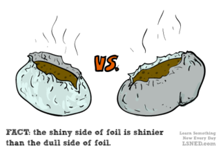

Let’s just set the record straight right from the get-go. “Tinfoil” is an obsolete term, as there has been no tin in the foil since about 1926. The foil is made almost entirely of aluminum, which should probably be your favourite metal for good reasons. Reynolds brand foil is 98.5% aluminum, leaving that 1.5% to be mostly iron and silicon for durability reasons. No tim involved. So, from here on in, we call it aluminum foil.
You may have noticed that everybody has their opinion about the shiny side of foil. If you are bar-b-queing vegetables you have to wrap them with the shiny side of the foil inwards, so the shiny part can reflect heat back in to warm your asparagus. It sounds like it makes good scientific sense. Of course, you’ll also run into people who say you should cook them with the shiny side out, so it reflects heat away and the veggies don’t burn too fast. I suppose there’s logic there too.
When we talk about reflecting heat, this involves heat that moves by radiation in the form of infrared waves travelling invisibly through the air. Pretty much any surface will reflect some of these waves, while absorbing others. Under the sun, a black shirt will feel hotter than a white shirt for this reason. The white one reflects more infrared waves. So there is certainly some scientific merit to this shiny-side-of-the-foil idea.
That’s why it’s so easy to believe. The truth is, however, that the shiny side of the foil has very little impact on the results of your cooking. The only reason one side is shiny is a result of the manufacturing process, as the aluminum is being squashed flat underneath a giant roller, which is smoother than the surface underneath, giving one side of the foil more sheen. So it seems the theories about shiny-sides came after the fact, as a reverse-engineered attempt at justification.
Now go forth and roast some garlic!
- Source: Shiny and Dull Aluminum Foil – Ask A Scientist
- Source: Reynolds Wrap FAQ
Find interesting facts about: cooking